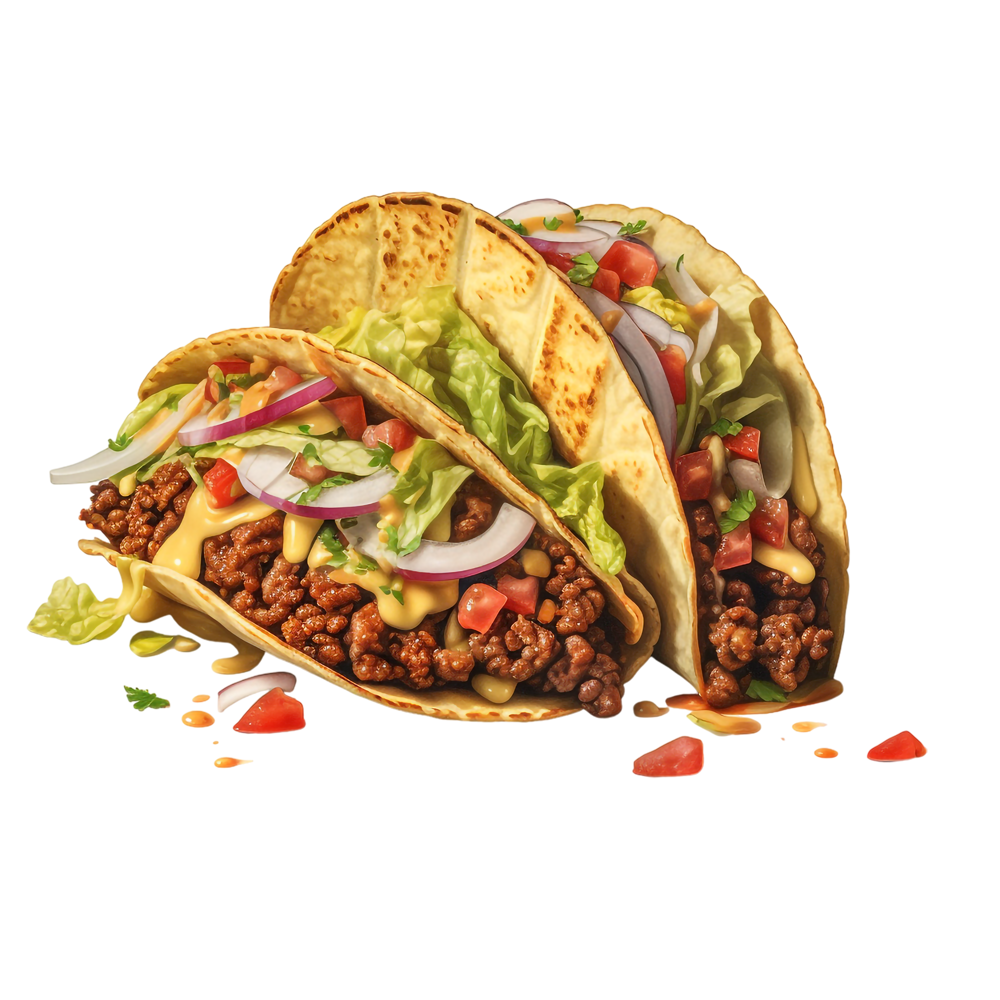

Beef Tacos

Ingredients
- 1 lb ground beef
- 8 taco shells
- 1 packet taco seasoning
- 1 cup shredded lettuce
- 1 cup shredded cheddar cheese
- 1 tomato, diced
- 1/2 cup salsa
- 1/4 cup sour cream
Preparation
- Brown the ground beef in a skillet over medium heat.
-
Drain excess fat, then stir in taco seasoning and water per packet
instructions.
- Simmer for 5 minutes, stirring occasionally.
- Warm the taco shells according to package instructions.
-
Fill each shell with beef, then top with lettuce, cheese, tomato, salsa,
and sour cream.
- Serve immediately.